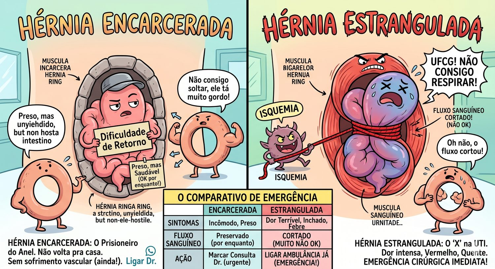
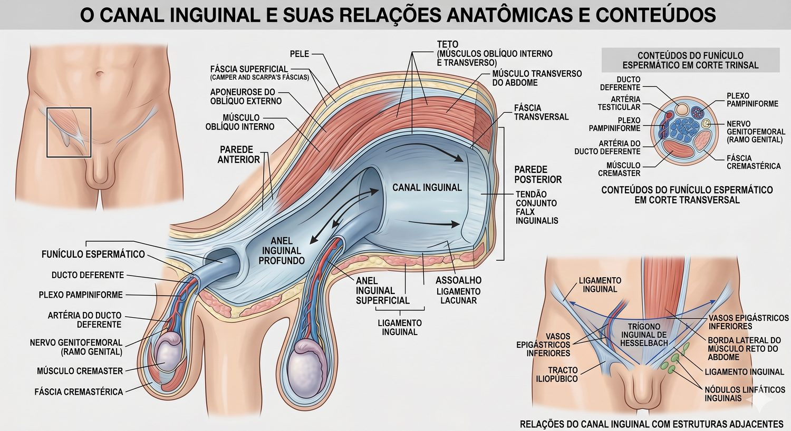
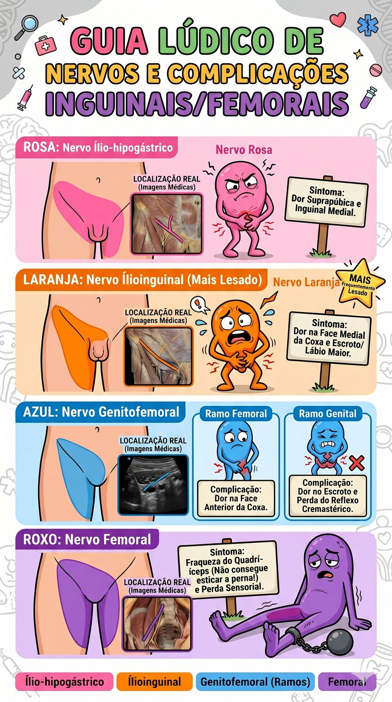
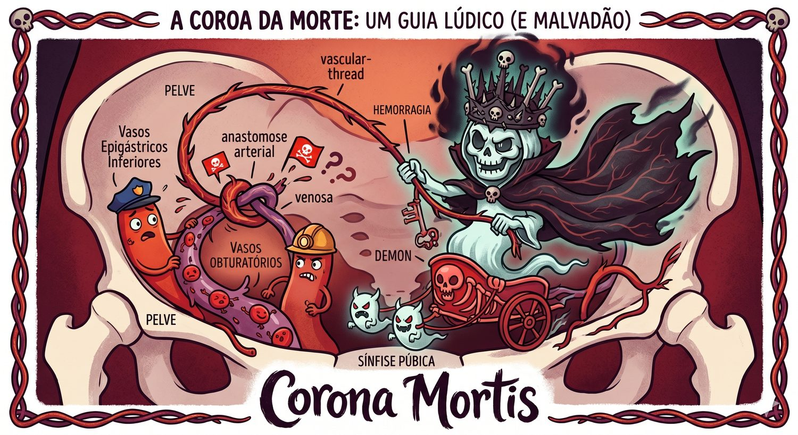
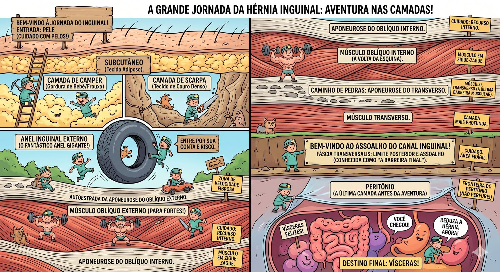
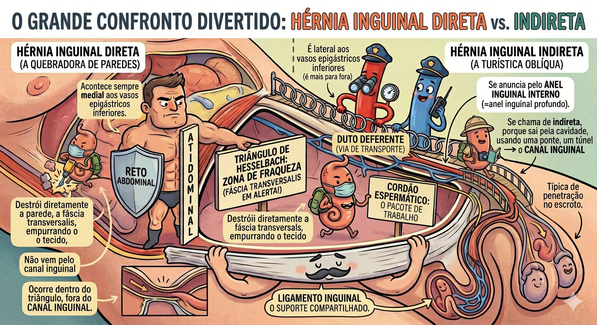

Aula completa para residentes — Anatomia cirúrgica em camadas, técnica aberta, complicações, diferencial direto vs indireto e questões das principais bancas do RS.
Pense na parede abdominal como a parede de um prédio antigo. Ela tem janelas, portas, tubulações que passam por ela. Toda vez que você perfura uma parede para passar um cano, você cria um ponto fraco. A região inguinal é exatamente isso: um ponto onde estruturas atravessam a parede abdominal, e isso a torna a região mais fraca do abdome.
(É como quando você faz um buraco na parede pra passar um cabo — se o buraco for grande demais, as coisas do outro lado começam a "vazar" por ele.)
Durante o desenvolvimento fetal, o testículo migra do retroperitônio para a bolsa escrotal, abrindo o processo vaginal (um divertículo peritoneal). Quando esse processo não fecha completamente, cria-se a predisposição à hérnia indireta. Em mulheres, o ligamento redondo passa pelo mesmo canal, mas é estrutura muito menor — o anel permanece mais fechado.
(O testículo é como um elevador que desce e deixa o poço aberto atrás dele. Se o poço não fechar direito, o intestino desce depois.)
Epidemiologia geral:
• Hérnia inguinal = 75% de todas as hérnias
• Indireta > Direta nos dois sexos
• Homens: risco de vida de 27%
• Mulheres: risco de vida de 3%
• Cirurgia mais comum em cirurgia geral no mundo
| Tipo | Trajeto | Relação Epigástrica | Frequência |
|---|---|---|---|
| Indireta | Pelo anel inguinal profundo → canal inguinal → anel superficial | LATERAL aos epigástricos inferiores | 65–70% |
| Direta | Através do triângulo de Hesselbach diretamente | MEDIAL aos epigástricos inferiores | 25–30% |
| Femoral | Abaixo do ligamento inguinal, pelo canal femoral | — | 5% (mais em mulheres) |
Encarceramento: o saco herniário saiu e não consegue mais voltar — mas ainda tem circulação. (Fica preso, mas vivo.)
Estrangulamento: o conteúdo ficou preso E perdeu a circulação — isquemia → necrose → perfuração. (Preso e morrendo.) URGÊNCIA CIRÚRGICA.
Hérnia femoral tem MAIOR risco de estrangulamento que inguinal — pelo anel femoral ser rígido (osso + ligamentos).


| Músculo | Origem → Inserção | Aponeurose | Papel no Canal Inguinal |
|---|---|---|---|
| Oblíquo Externo | Costelas 5–12 → crista ilíaca + linha alba | Forma o teto do canal inguinal anterior + anel superficial | Abre-se para expor o canal. (É a "porta da frente" que o cirurgião abre primeiro.) |
| Oblíquo Interno | Crista ilíaca + fáscia toracolombar → costelas 10–12 | Fibras em arco sobre o canal → forma o teto do canal | Ao se contrair, comprime o funículo — mecanismo de válvula fisiológica |
| Transverso Abdominal | Fáscia toracolombar + costelas 7–12 → linha alba | Junto com o oblíquo interno forma o tendão conjunto (falx inguinalis) | A fáscia transversalis derivada deste músculo forma o assoalho real do canal |
| Cremaster | Derivado do oblíquo interno | Envolve o funículo espermático | Quando dividido no intraoperatório, facilita identificar o saco herniário |
Pele → Camper → Scarpa → Oblíquo Externo → Oblíquo Interno → Transverso → Fáscia Transversalis → Gordura pré-peritoneal → Peritônio
"PCSOOTFGP" — "Por Causa Sua, Opero Ótimas Telas Firmíssimas, Grande Preceptora"
| Ligamento | Anatomia | Importância Cirúrgica | Pegadinha de Prova |
|---|---|---|---|
| Inguinal (Poupart) | Borda inferior da aponeurose do oblíquo externo; vai da EIAS ao tubérculo púbico | Estrutura de fixação inferior na técnica de Bassini e McVay. Margem inferior do canal inguinal | Forma o TETO do canal femoral — não confundir com assoalho inguinal |
| Lacunar (Gimbernat) | Extensão medial do ligamento inguinal; em leque → ligamento de Cooper | Limita medialmente o anel femoral. Na hérnia femoral encarcerada, divide-se para reduzir o conteúdo | Cuidado com a veia femoral ao cortar o Gimbernat! |
| Cooper (Pectíneo) | Periósteo do pecten do osso púbico | Ponto de ancoragem na técnica de McVay e na hernioplastia laparoscópica (TAPP/TEP) | McVay usa Cooper → indicada para hérnia femoral |
| Trato Iliopúbico | Faixa fibrosa paralela e profunda ao lig. inguinal; vai da EIAS ao ramo superior do púbis | Estrutura de fixação inferior na abordagem laparoscópica. Mais resistente que o lig. inguinal | Não é visível na cirurgia aberta tradicional — só na abordagem pré-peritoneal |
| Nervo | Origem | Trajeto | Lesão → Consequência | Onde Está no Campo |
|---|---|---|---|---|
| Ilioinguinal (L1) |
Plexo lombar L1 | Perfura o m. transverso → corre DENTRO do canal inguinal acima do funículo → sai pelo anel superficial | Lesão → anestesia/hipoestesia na face medial da coxa, raiz do pênis e escroto | Encontrado ao abrir o canal, geralmente acima e lateral ao funículo. IDENTIFICAR e PRESERVAR |
| Iliohipogástrico (L1) |
Plexo lombar L1 | Corre entre oblíquo interno e transverso → perfura oblíquo interno ~2 cm medial à EIAS | Lesão → anestesia suprapúbica e região inguinal medial | Superficial ao oblíquo interno, aparece logo ao afastar os músculos. Pode ser confundido com fáscia |
| Ramo Genital do Genitofemoral (L1-L2) |
Plexo lombar L1-L2 | Desce retroperitonealmente → entra pelo anel inguinal profundo JUNTO com o funículo espermático (ramo genital) | Lesão → perda do reflexo cremastérico, dor em face anterior da coxa (ramo femoral) | Passa DENTRO do funículo espermático — identificado ao dissecar o cremaster |

| Vaso | Trajeto | Risco |
|---|---|---|
| Vasos Epigástricos Inferiores | Nasce da ilíaca externa → sobe medialmente ao anel inguinal profundo → vai para o reto abdominal | Lesão no acesso ao espaço de Retzius (laparoscopia). São o marcador anatômico entre hérnia direta e indireta |
| Corona Mortis PROVA! | Anastomose anômala entre vasos obturatório e ilíaco externo/epigástrico. Presente em 10–30% das pessoas | Presente sobre o ligamento de Cooper. Lesão → hemorragia GRAVE no espaço retropúbico. Difícil controle. Nome foi dado pelos cirurgiões medievais pois a lesão era frequentemente fatal. |
| Vasos Testiculares (Gonadais) | Nasce da aorta → desce retroperitonealmente → entra pelo anel profundo → corre no funículo | Lesão → atrofia testicular. Tração excessiva do funículo durante a cirurgia → isquemia |
| Vasos Deferentes | Dentro do funículo, junto com os vasos testiculares | Lesão bilateral → infertilidade. Preservar sempre |

Cada camada abaixo descreve o que você vê conforme vai abrindo a cirurgia. Siga a ordem: é exatamente assim que você vai operar. Para cada camada: anatomia → aspecto visual intraoperatório → erros comuns → o que pode dar errado.

Direta = Dentro do triângulo
Indireta = Infiltrou pelo anel
Outra forma: pense nos vasos epigástricos como um árbitro no meio do campo. Hérnia do lado de fora (lateral) = indireta. Hérnia do lado de dentro (medial) = direta.
(É como uma fronteira numa cidade: quem está do lado de lá do rio = uma categoria; do lado de cá = outra categoria.)

| Tipo | Descrição | Característica |
|---|---|---|
| I | Indireta — anel inguinal profundo normal | Hérnia do lactente; processo vaginal patente |
| II | Indireta — anel inguinal profundo dilatado, parede posterior íntegra | Adultos jovens; saco não desce ao escroto |
| III-A | Direta | Fraqueza da parede posterior |
| III-B | Indireta — anel muito dilatado, comprometendo parede posterior; escrotal | Hérnias grandes, com saco escrotal; mais difíceis |
| III-C | Femoral | Canal femoral |
| IV | Recidivadas (qualquer tipo) | Indica abordagem pré-peritoneal ou laparoscópica |
A classificação mais cobrada em prova é o diferencial entre III-B (indireta grande) e IV (recidivada) — ambas têm indicação preferencial de abordagem posterior/laparoscópica. Saber que III-C = hérnia femoral também é frequente.
A hernioplastia de Lichtenstein é a técnica mais realizada no mundo para hérnia inguinal em adultos. Sem tensão. Com tela. Recidiva <1% nos primeiros 5 anos. É o que vai cair na prova.
A virilha tem um furo obrigatório — o lugar por onde o testículo desceu e por onde o funículo passa a vida inteira. Não dá para fechar esse furo. Então a cirurgia moderna não tenta costurar o buraco (isso é tensão, dor e recidiva): ela forra a parede inteira por trás com um remendo, o funículo continua passando, e a pressão da barriga aplica a tela contra a parede.
Transversa de 5–8 cm, 2 cm acima do ligamento inguinal, do tubérculo púbico em direção à EIAS. Bisturi frio (lâmina 10 ou 15). Hemostasia ponto a ponto com eletrocautério.
Metzenbaum ou Mayo separando o subcutâneo. Identificar e abrir a fáscia de Scarpa. Expor a aponeurose brilhante do oblíquo externo.
Identificar o anel inguinal superficial medialmente, introduzir a Metzenbaum por ele e abrir a aponeurose no sentido das fibras, lateralmente. Criar dois retalhos (superior e inferior) com Farabeuf.
É aqui que ele aparece — correndo sobre o funículo, paralelo a ele. Identificar agora e vigiar durante toda a cirurgia. Não seccionar, não prender em ponto.
Dissecar o funículo do assoalho do canal com dedo ou Mixter. Passar Penrose ou vessel loop em volta para retraí-lo. Dissecar circunferencialmente do anel profundo (lateral) ao superficial (medial).
(É passar uma correia por trás de um cano para poder puxá-lo e trabalhar em volta.)Corre dentro do funículo, junto aos vasos cremastéricos. É lesado ao dissecar o funículo com pressa ou com energia.
Abrir o cremaster longitudinalmente. Indireta: saco na porção anterossuperior do funículo — translúcido, globoso. Direta: abaulamento da parede posterior, medial aos vasos epigástricos, irrompendo pela fáscia transversalis.
"No intraoperatório, como distinguir direta de indireta?" → Relação com os vasos epigástricos inferiores. Lateral = indireta · Medial = direta.
Indireta: separar o saco dos elementos do funículo, abrir e inspecionar o conteúdo, ligadura alta do colo com transfixante Vicryl 2-0, ressecar o excesso. Saco pequeno: invaginar sem abrir.
Direta: invaginar a fáscia transversalis com sutura contínua ou pontos separados. Não é necessário abrir.
Polipropileno monofilamentar, 7–8 × 15 cm. Cortar fenda em V no canto lateral, criando dois ramos que abraçam o funículo. Posicionar de modo a:
Prolene 2-0 ou Vicryl 2-0:
Ilioinguinal (sobre o funículo) · Ílio-hipogástrico (acima, na aponeurose) · Ramo genital do genitofemoral (dentro do funículo). Os três respondem pela inguinodinia crônica, complicação mais frequente hoje que a própria recidiva.
Afrouxar os afastadores e reposicionar o funículo sobre a tela. Fechar a aponeurose do oblíquo externo com Vicryl 2-0/0 contínuo, Scarpa com Vicryl 3-0 e pele com Monocryl 4-0 intradérmico.
Desnecessário na hernioplastia primária não complicada. Considerar apenas em hérnia volumosa com grande espaço morto — Penrose por 24–48 h.
1) A tela ultrapassa o tubérculo púbico em 1–2 cm e cobre todo o Hesselbach?
2) O novo anel profundo admite a ponta da Kelly — nem apertado, nem largo?
3) Os três nervos estão íntegros e livres de pontos?
É a janela única da virilha por onde todas as hérnias dessa região saem — inguinal direta, indireta e femoral. Um só buraco, três saídas. Por isso as técnicas modernas por dentro (TEP/TAPP, Stoppa) não tratam "um tipo de hérnia": elas tapam a janela inteira de uma vez.
| Limite | Estrutura |
|---|---|
| Superior | Arco do músculo oblíquo interno e transverso (tendão conjunto) |
| Inferior | Ligamento pectíneo (de Cooper) / ramo púbico |
| Medial | Borda lateral do músculo reto abdominal |
| Lateral | Músculo iliopsoas |
O ligamento inguinal atravessa o orifício e o divide em dois andares: acima saem as inguinais (direta e indireta); abaixo sai a femoral. A parede posterior de todo o orifício é a fáscia transversalis — quando ela falha, alguma hérnia aparece.
Explica de uma vez: por que a tela pré-peritoneal cobre os três tipos simultaneamente; por que hérnia femoral coexiste com inguinal e passa despercebida na via anterior; e por que a recidiva após Lichtenstein pode aparecer como femoral — a via anterior não cobre o andar de baixo.
Substituiu Nyhus e Gilbert na prática. Registra três dados em uma linha:
| Eixo | Códigos |
|---|---|
| Tipo | L lateral (indireta) · M medial (direta) · F femoral |
| Tamanho do defeito | 1 ≤ 1,5 cm (1 polpa digital) · 2 1,5–3 cm · 3 > 3 cm |
| Primária ou recidivada | P primária · R recidivada |
Hérnia indireta de 2 cm, primária → L2P. Recidiva direta grande → M3R. A "polpa digital" (~1,5 cm) é a régua intraoperatória oficial.
Nyhus (I a IV) ainda aparece em provas antigas: I = indireta com anel normal · II = indireta com anel dilatado, assoalho íntegro · III = defeito do assoalho (IIIa direta, IIIb indireta grande/mista, IIIc femoral) · IV = recidivada.
Quando você olha a virilha por dentro, existem duas áreas onde grampear é proibido: numa passam vasos grandes (se furar, sangra muito), na outra passam nervos (se prender, dói para sempre). Os nomes dizem tudo.
| Triângulo | Limites | Conteúdo | Risco |
|---|---|---|---|
| Triangle of Doom (triângulo fatal) | Medial: ducto deferente · Lateral: vasos gonadais · Ápice: anel inguinal profundo | Vasos ilíacos externos, veia femoral | Hemorragia catastrófica |
| Triangle of Pain (triângulo da dor) | Medial: vasos gonadais · Lateral: trato iliopúbico | Nervo femoral, cutâneo femoral lateral, ramo femoral do genitofemoral | Inguinodinia crônica incapacitante |
Nunca grampear abaixo do trato iliopúbico, nem lateralmente aos vasos gonadais. Acima do trato e medial, é seguro. Muitos serviços já usam fixação com cola de fibrina ou nenhuma fixação (tela autofixante) exatamente para eliminar esse risco.
| TAPP (transabdominal pré-peritoneal) | TEP (totalmente extraperitoneal) | |
|---|---|---|
| Acesso | Entra na cavidade, abre o peritônio e cria o espaço | Nunca entra na cavidade — dissecção só no espaço pré-peritoneal |
| Vantagem | Anatomia mais familiar; permite inventariar a cavidade e avaliar o lado oposto | Sem aderência visceral, sem lesão de alça, sem hérnia de trocarte intraperitoneal |
| Desvantagem | Risco de lesão visceral e hérnia de trocarte; precisa fechar o peritônio | Curva de aprendizado maior; espaço de trabalho pequeno; conversão se perfurar o peritônio |
| Indicação preferencial | Bilateral, recidiva após reparo anterior, hérnia encarcerada | Primária uni ou bilateral em mãos treinadas |
Bilateral (uma anestesia, dois reparos, mesmos portais) · recidiva após via anterior (campo virgem, sem fibrose) · mulheres (maior incidência de femoral oculta, que a via anterior não cobre) · retorno precoce ao trabalho. Contra: anestesia geral obrigatória, custo, curva de aprendizado.
| Situação | Definição | Conduta |
|---|---|---|
| Hérnia de Richter | Apenas a borda antimesentérica da alça está no saco — a luz permanece pérvia | Estrangula sem obstruir. Não há parada de eliminação de flatos, e por isso o diagnóstico atrasa. Necrose com quadro "leve" |
| Hérnia de Littré | Contém divertículo de Meckel | Ressecção do divertículo + reparo |
| Hérnia de Amyand | Contém o apêndice cecal | Apêndice normal → reparo com tela. Apendicite/perfuração → apendicectomia e reparo sem tela (campo contaminado) |
| Hérnia deslizante | Uma víscera forma a parede do saco (cólon à esquerda, bexiga, ceco à direita) | Não tentar dissecar a víscera do saco — risco de lesão de alça ou de bexiga. Reduzir em bloco e reparar |
| Hérnia femoral | Abaixo do ligamento inguinal, medial à veia femoral | Mais comum na mulher; alto risco de estrangulamento → operar sempre, mesmo assintomática. Reparo ideal: pré-peritoneal ou McVay (Cooper) |
Dor na face medial da coxa que piora à extensão e rotação interna do quadril — clássico da hérnia obturatória, típica da idosa magra ("little old lady's hernia"), que se apresenta como obstrução intestinal sem massa palpável.
Homens com hérnia inguinal mínima ou assintomática podem ser observados com segurança: o risco de estrangulamento é muito baixo (< 0,3% ao ano). Contudo, cerca de 70% cruzam para cirurgia em 5–10 anos por surgimento de sintomas — a observação adia, não substitui.
Hérnia femoral (alto risco de estrangular) · sintomática · encarcerada · irredutível · em mulher (maior chance de ser femoral). Hérnia encarcerada com sinais de estrangulamento é cirurgia de urgência.
| Técnica | Princípio Biomecânico | Fixação | Vantagem | Desvantagem/Indicação Especial |
|---|---|---|---|---|
| Lichtenstein PADRÃO OURO | Sem tensão com tela | Tela de polipropileno sobre parede posterior | Recidiva <1%; pode ser sob anestesia local | Corpo estranho; contraindicado em campo infectado |
| Bassini | Com tensão — aproximação de estruturas | Tendão conjunto (oblíquo interno + transverso) ao ligamento inguinal | Sem tela; histórica; útil em campo infectado | Tensão → maior recidiva (~10–15%); não recomendada como padrão |
| Shouldice | Com tensão — reparo em 4 camadas da fáscia transversalis | Imbrincação da fáscia transversalis + tendão conjunto ao lig inguinal (4 suturas contínuas) | Melhor resultado entre as técnicas sem tela (<2% em centros especializados) | Tecnicamente difícil; exige experiência; sem tela |
| McVay FEMORAL! | Com tensão — usa o ligamento de Cooper | Tendão conjunto ao ligamento de Cooper (pectíneo) | ÚNICA técnica aberta que corrige hérnia femoral | Alta tensão → pode precisar incisão relaxante; mais dolorosa |
Mão direita = instrumentos de ação (corte, coagulação, sutura, dissecção ativa). Mão esquerda = instrumentos de exposição (tração, afastamento, contratração). O cirurgião é destro, atuando pelo lado direito da mesa.
| Instrumento | Uso Principal | Quando Usar |
|---|---|---|
| Bisturi Cabo 3 + Lâmina 10/15 | Incisão de pele e tecidos | Incisão inicial; abertura precisa do saco |
| Tesoura de Metzenbaum | Dissecção delicada de tecidos moles | Abertura oblíquo ext.; dissecção funículo; abertura saco |
| Tesoura de Mayo | Corte de estruturas mais firmes | Subcutâneo; cremaster; tecidos mais espessos |
| Disector de Mixter (Ângulo-Reto) | Dissecar ao redor de estruturas tubulares sem visualização direta | Passar o Penrose ao redor do funículo; isolar vasos |
| Afastador de Farabeuf | Afastamento de bordas da incisão | Durante toda a cirurgia; criar exposição |
| Afastador de Volkmann | Afastamento de músculos | Exposição lateral do campo; afastar oblíquo interno |
| Pinça de Allis | Preensão de tecidos (com dentes) | Segurar bordas do saco herniário; bordas da aponeurose |
| Pinça Kelly Curva | Preensão hemostática e dissecção romba | Hemostasia de vasos pequenos; dissecção do saco |
| Pinça Babcock | Preensão atraumática de vísceras | Segurar alça intestinal se o saco for aberto e houver conteúdo |
| Porta-Agulha de Hegar | Sutura | Ligadura do saco; fixação da tela; fechamento |
| Pinça Adson com Dente | Preensão da pele durante sutura | Fechamento intradérmico da pele |
Monofilamentares inabsorvíveis (Prolene) → onde precisa de suporte permanente (fixação da tela ao ligamento inguinal — estrutura que não regenera). Multifilamentares absorvíveis (Vicryl) → onde o tecido vai curar e ganhar força sozinho (aponeurose, subcutâneo). Monofilamentares absorvíveis (Monocryl) → pele, pelo bom resultado estético.
Se o tecido tem capacidade de regenerar resistência → absorvível é suficiente.
Se o tecido é fibra colágena densa que não regenera (ligamento, osso) → inabsorvível obrigatório.
Exceção clínica: em técnicas sem tela (Shouldice), a fáscia transversalis recebe suturas de aço inoxidável (na técnica original) ou Prolene — pois a estrutura criada precisa de suporte permanente.
| Complicação | Frequência | Causa Anatômica / Técnica | Prevenção | Conduta |
|---|---|---|---|---|
| Hematoma | 3–5% | Hemostasia inadequada de subcutâneo ou espaço morto do saco | Hemostasia cuidadosa; fechar fáscia de Scarpa; não deixar espaço morto | Pequenos: conservador. Grande / tenso: drenagem cirúrgica |
| Seroma | 2–10% | Acúmulo de linfa/exsudato no espaço previamente ocupado pelo saco herniário | Deixar saco distal in situ (aberto) em hérnias grandes; compressa fria | Aspiração se sintomático. Geralmente resolve espontaneamente |
| Infecção de Ferida | 1–3% | Contaminação de campo; hematoma → superinfecção | Técnica asséptica; profilaxia antibiótica (cefazolina 1g EV); curta duração | Superficial: antibiótico. Profunda com tela: desbridamento ± remoção da tela |
| Dor Crônica | 10–15% | Aprisionamento nervoso na tela (ilioinguinal, iliohipogástrico, genitofemoral) | Identificar e preservar nervos; não passar sutura em nervos; não fixar tela muito lateralmente | Analgésicos; bloqueio nervoso; neurectomia em casos refratários |
| Recidiva | <1% (Lichtenstein) / 10–15% (sem tela) | Tensão excessiva; fixação inadequada da tela; tela pequena; hérnia perdida (hérnia em pantalona) | Técnica correta; tela adequada; identificar hérnias combinadas | Reoperação — preferir abordagem laparoscópica (campo virgem) |
| Orquite Isquêmica | 0.5–1% | Lesão/trombose de vasos testiculares ou do plexo pampiniforme durante dissecção do saco escrotal | Dissecção cuidadosa; em saco escrotal volumoso, seccionar e deixar distal in situ | Orquite → conservador (anti-inflamatório). Atrofia → orquiectomia se necessário |
| Lesão do Ducto Deferente | <1% | Confusão com estrutura do saco; dissecção agressiva | Identificar o ducto antes de qualquer corte; é firme, cilíndrico | Reconstituição imediata se identificada (vasovastostomia); infertilidade se bilateral |
| Lesão Vascular (Corona Mortis / Epigástricos) | Raro | Corona mortis sobre o Cooper; epigástricos ao abrir anel profundo | Identificar vasos antes de cortar; cautela sobre o Cooper na McVay/laparoscopia | Hemostasia imediata com compressão + clipe/ligadura |
Coexistência de hérnia direta E indireta no mesmo lado, com o funículo no centro (como duas pernas de uma calça). Frequência: 15–20% das hérnias. Perigo: o cirurgião pode tratar apenas uma e deixar a outra → falsa impressão de sucesso → recidiva precoce. Identificar sempre os vasos epigástricos e inspecionar ambos os lados.
(Como uma calça com duas pernas: você pode arrumar uma perna e esquecer a outra, que vai rasgar de novo.)
Clique em "Ver Gabarito + Comentário" para revelar a resposta e a explicação completa. As questões abaixo são baseadas no padrão das bancas citadas e nos temas mais cobrados nos últimos anos.
Gabarito: C
Raciocínio: O saco na porção ântero-superior do funículo + lateral aos vasos epigástricos = hérnia indireta. A hérnia indireta segue o trajeto do processo vaginal pelo anel inguinal profundo, que fica lateral aos vasos epigástricos inferiores. O triângulo de Hesselbach, por definição, é o local da hérnia DIRETA — e é delimitado pelos vasos epigástricos (lateralmente), ligamento inguinal (inferiormente) e reto abdominal (medialmente). Portanto a hérnia indireta NÃO passa pelo triângulo de Hesselbach, e o elemento que o delimita lateralmente são os vasos epigástricos inferiores.
Alternativa A: Errada — seria hérnia direta, medial aos epigástricos, através do triângulo de Hesselbach.
Alternativa B: Errada — o Gimbernat delimita o anel femoral, não o triângulo de Hesselbach.
Alternativa D: Errada — seria hérnia direta (lateral ao anel profundo, medial aos epigástricos).
Alternativa E: Errada — o ligamento inguinal delimita inferiormente o Hesselbach, e também forma o assoalho do canal inguinal.
Gabarito: C
Raciocínio: Em mulheres com quadro clínico de hérnia inguinal, sempre pensar em hérnia femoral — ela é proporcionalmente mais comum em mulheres do que em homens (anatomia pélvica mais ampla). O encarceramento é mais frequente na hérnia femoral pelo anel rígido. No intraoperatório, ao explorar o campo, o cirurgião pode encontrar hérnia femoral e não inguinal. A única técnica aberta que trata adequadamente a hérnia femoral (ao fixar o tendão conjunto ao ligamento de Cooper, fechando o espaço femoral) é a McVay.
Sobre a Lichtenstein (alternativas A e E): É o padrão ouro para hérnia INGUINAL, mas não trata a hérnia femoral. Além disso, em campo com risco de contaminação (conteúdo com sofrimento vascular potencial), a tela é controversa.
Sobre a Shouldice (D): Excelente técnica sem tela, mas não corrige a femoral.
Pérola: "Mulher + hérnia inguinal + encarceramento → pensar em FEMORAL → McVay"
Gabarito: B — Nervo Ilioinguinal
Raciocínio: O nervo ilioinguinal (L1) é o mais frequentemente lesado na hernioplastia inguinal. Ele corre dentro do canal inguinal, sobre o funículo, e é facilmente aprisionado durante a fixação da tela ou seco durante a abertura da aponeurose. Sua lesão causa: hipoestesia/anestesia na face medial da coxa + raiz do escroto/lábio maior + face ântero-medial do escroto — exatamente o descrito na questão.
Alternativa A (Iliohipogástrico): Lesão causaria anestesia suprapúbica e inguinal medial, não escrotal.
Alternativa C (Ramo femoral do genitofemoral): Anestesia na face anterior da coxa (triângulo femoral de Scarpa).
Alternativa D (Ramo genital do genitofemoral): Perda do reflexo cremastérico; dor no escroto, mas o território mais clássico de queimação pós-cirúrgica da face medial da coxa aponta para o ilioinguinal.
Alternativa E (Femoral): Lesão grave, causaria fraqueza de flexão do quadril e extensão do joelho — não é o quadro descrito.
Gabarito: C
Raciocínio: Corona Mortis ("coroa da morte") é uma anastomose vascular anômala entre o vaso obturatório (ramo da ilíaca interna) e os vasos epigástricos inferiores ou ilíacos externos. Está localizada sobre ou atrás do ligamento de Cooper. Sua importância é crítica na hernioplastia laparoscópica (TAPP/TEP) e na McVay, pois a fixação ao Cooper pode lacerá-la → hemorragia grave no espaço retropúbico. O nome "morte" foi dado porque a lesão era frequentemente fatal antes das técnicas modernas de hemostasia. Prevalência: 10–30% das pessoas.
Gabarito: C
Raciocínio: Em lactentes e crianças menores de 1 ano, a hérnia inguinal indireta NÃO fecha espontaneamente (diferente da hérnia umbilical, que fecha). O risco de encarceramento no primeiro ano de vida é de 25–30%, muito maior que em adultos. Portanto, a indicação é correção cirúrgica PRECOCE, eletiva, logo após o diagnóstico. Em prematuros, pode-se aguardar até a alta hospitalar para evitar complicações peri-anestésicas, mas a cirurgia não deve ser indefinidamente adiada. A técnica em crianças é a herniorrafia simples (ligadura alta do saco) sem uso de tela.
Atenção: Cinta herniária é CONTRAINDICADA em crianças — pode causar atrofia testicular por compressão.